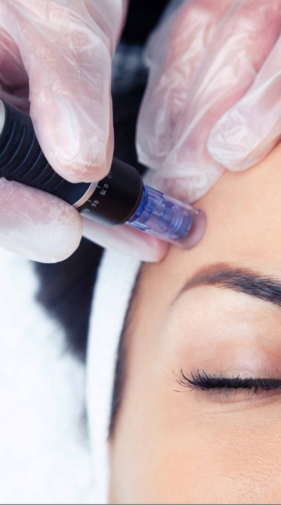

Thermage® FLX
Radiofrequency tightening for hooded lids and crepey skin around the eyes, or for the full face. One session, with results that build over months.
Eyes · 450 pulsesFull face · 900 pulsesNo downtime
Learn More We don’t change your face. We keep your natural beauty and bring out a better version of you: lifting, restoring and refining, planned around your own features.
Book a Consultation 1Upper2Middle3LowerTemplesUnder-eyeLipsChin projectionJawline
1Upper2Middle3LowerTemplesUnder-eyeLipsChin projectionJawlineFace Mapping
The concern may not be one feature. Often it is overall proportion. So before we treat anything, we map how your features work together.
Firmer skin and a lifted look, without surgery or downtime.
Radiofrequency tightening for hooded lids and crepey skin around the eyes, or for the full face. One session, with results that build over months.

Needle-free lift for brows, cheeks and jawline. Tones the muscles and tightens the skin at the same time.

Radiofrequency and targeted ultrasound boost your skin’s own collagen and hyaluronic acid, for firmer, smoother skin. Choose one area, or any three planned together.
Restore softness and structure where it has faded, in balance with your own features.

Chin projection and length, planned to balance your profile and lower face.
A cleaner line from chin to ear, for definition that still looks like you.

Softens hollows and shadows under the eyes for a more rested look. For dark circles, see Under-Eye Brightening in Skin & Glow.

Restores soft fullness at the temples, so the upper face looks smooth and youthful.
Volume, shape or both. We design to your natural lip proportions.

Subtle refinement of the nose bridge and columella for a smoother profile.
Gradual collagen restoration for cheek volume and fine cheek lines, developing naturally over a few months.
A collagen-stimulating filler that adds structure along the jaw and cheekbones. Also used to restore volume in the hands.
Designed for you
Every face is different. At a complimentary consultation, your provider assesses your goals and builds a plan with clear pricing before any treatment.
Soften lines and tension while keeping your expressions.
Forehead lines, frown lines and crow’s feet. Your provider maps your muscles and chooses the product and dose for you.
A soft lift at the tail of the brow for a more open, rested eye.
A slimmer, more defined lower face.
Relaxes jaw tension and clenching, and softens a square lower face.
An FDA-approved injectable that permanently destroys fat cells under the chin, for a more defined profile.
Contouring injections on one side of the face to bring both sides into balance.
Contouring injections on both sides to slim and define the lower face, with a lift.
01
We don’t design you to look like someone else. We design to your own features, so you look like yourself on your best day.
02
Small, precise changes in the right places, rather than more product. Balance matters more than any single feature.
03
An Eastern-trained eye for proportion, applied to your own face. [The AURA aesthetic method and lead injector Star’s approach. Materials to come.]
Honest advice
A good plan is as much about what we leave out. Your provider will tell you when a treatment isn’t right for you.
About 30 minutes. No pressure to book a treatment.
What you’d like to change, and what you want to keep.
A full-face assessment and Gold Skin Analysis.
A written plan with options, timing and a clear quote.
Start the same day, or take the plan home and think it over.

[Star · Lead Injector. Credentials, approach and Instagram link to come.]
Rockefeller Center, New York
Book a complimentary Face Design Consultation. We’ll map your whole face, then build a written plan that stays true to you.
Book a Consultation